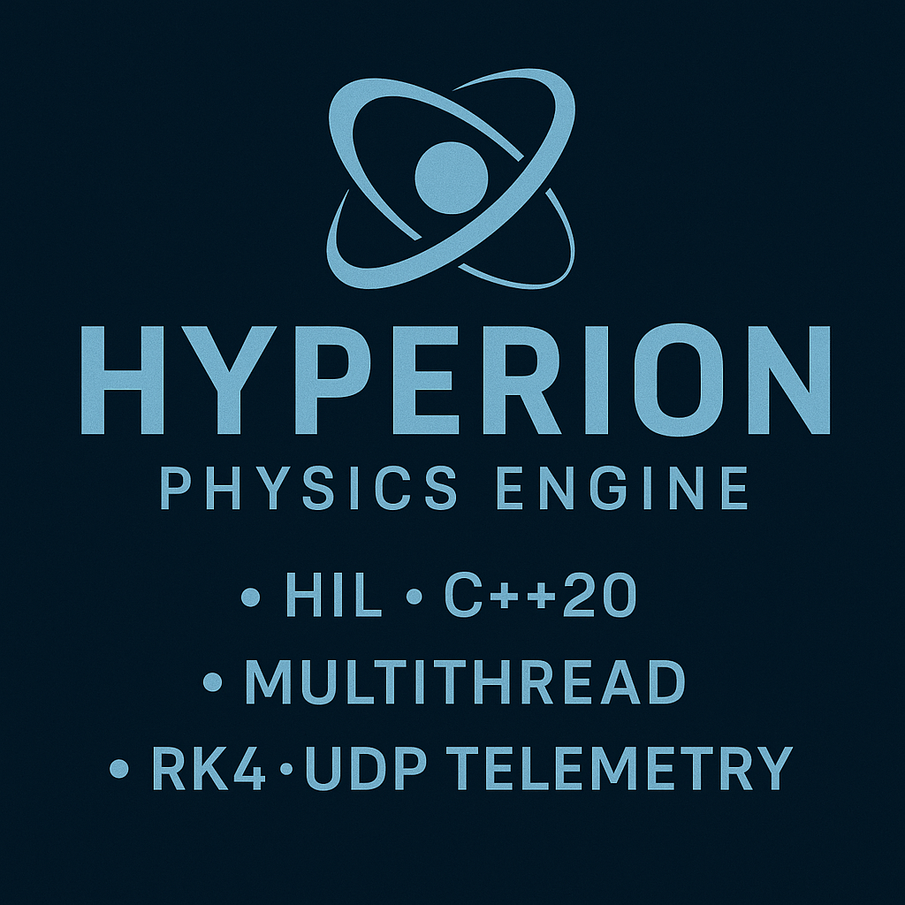

Hyperion 6-DOF Engine
Personal Project | Flight Software Infrastructure
Overview
Hyperion is a ground-up C++20 rigid-body physics engine for Hardware-in-the-Loop flight-software checks. Timing and thread safety matter more than game-engine convenience.
What I Built
01 | Multithreaded Architecture
ConcurrencyDecouples 10 kHz physics from 50 Hz telemetry with std::thread and std::mutex.
02 | Custom Integrator
RK4Fourth-order Runge–Kutta written from scratch for orbital-style precision without heavy external math libs.
03 | UDP Telemetry
CommsBinary state packets over BSD sockets, modeled like spacecraft-to-ground links.
Scope | Personal Build
HIL-oriented dynamics and telemetry. Deterministic timing first; not a general game physics sandbox.
Concurrency Topology
Core Implementation (C++20)
Vec3 compute_acceleration(const State& state) { // 1. Basic Monopole Gravity: F = -mu/r^3 * r_vec double r_sq = state.pos.dot(state.pos); double mu_r3 = MU_EARTH / (r_sq * std::sqrt(r_sq)); // 2. J2 Perturbation (Earth Oblateness) double z2 = state.pos.z * state.pos.z; double j2_factor = 1.5 * J2 * MU_EARTH * (R_EARTH * R_EARTH) / (r_sq * r_sq); Vec3 g_j2 = { j2_factor * (state.pos.x / r_mag * (5 * z2 / r_sq - 1)), j2_factor * (state.pos.y / r_mag * (5 * z2 / r_sq - 1)), j2_factor * (state.pos.z / r_mag * (5 * z2 / r_sq - 3)) }; return g_monopole + g_j2; }
void physics_loop() { double dt = 0.0001; // 100us Time Step while (running) { // 1. Compute Dynamics (Heavy Math) Vec3 forces = compute_forces(local_state); rk4_integrate(local_state, forces, dt); // 2. CRITICAL SECTION: Update Shared State { std::lock_guard<std::mutex> lock(state_mutex); shared_state = local_state; } // 3. Precision Timing (Spinlock) spin_wait_until(next_tick); } }
Performance Validation
user@hyperion:~/build$ ./Hyperion_Sim
=== HYPERION 6-DOF SIMULATION ENGINE ===
[PHYSICS] Thread initializing @ 10000 Hz
[COMMS] UDP Stream target: 127.0.0.1:8080
T+0.00s | ALT: 400.00 km | V: 7660.00 m/s
T+1.00s | ALT: 400.01 km | V: 7659.98 m/s
T+2.00s | ALT: 400.03 km | V: 7659.95 m/s
T+3.00s | ALT: 400.06 km | V: 7659.91 m/s
T+4.00s | ALT: 400.10 km | V: 7659.85 m/s
>> Telemetry Stream Active... Stability Nominal.
Tech Stack
Takeaway
Thread-safe C++20 dynamics at 10 kHz with RK4 and UDP telemetry, built for HIL-style flight-software checks.